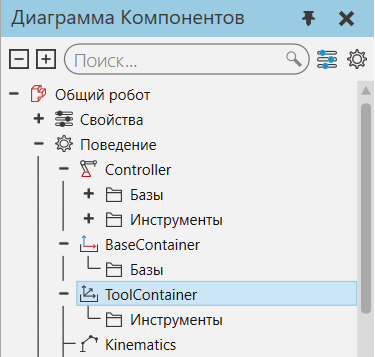
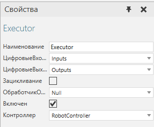
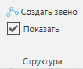
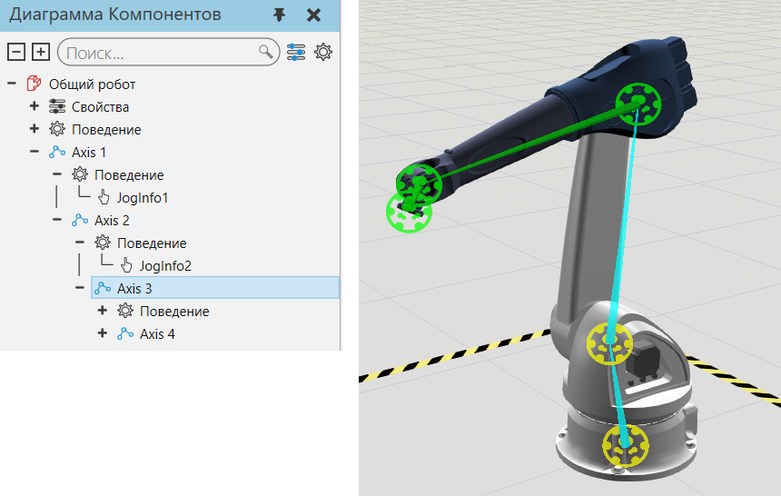
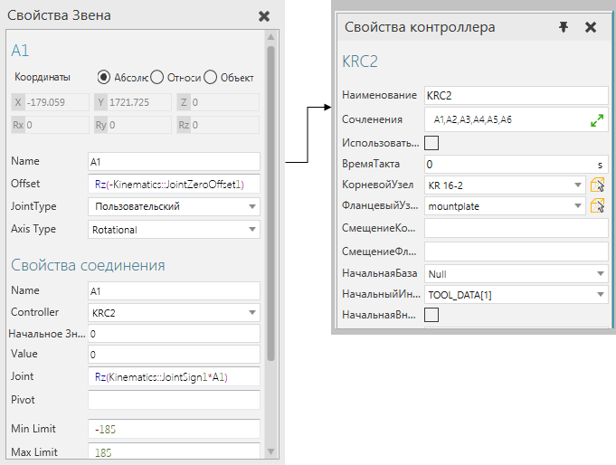
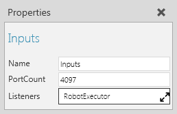
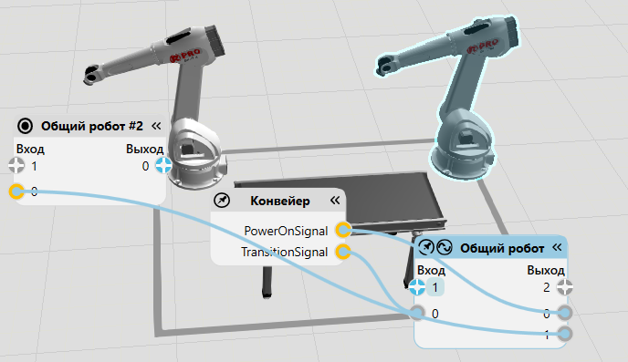
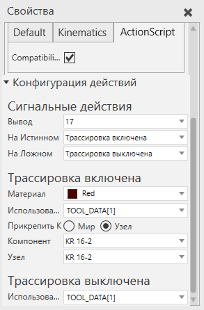

Тип поведения робототехника используется для обучения и выполнения программ роботов.

Типы
Название |
Описание |
|---|---|
Предоставляет логический контейнер для добавления и редактирования элементов рамок, используемых в качестве рамок баз, действующих как система координат базы. |
|
Определяет робота и его конфигурацию, например, его кинематику, соединения, скорость и ускорение. |
|
Предоставляет логический контейнер и исполнитель для программы робота. |
|
Определяет сервопривод и его конфигурацию, например его шарниры, скорость и ускорение. |
|
Предоставляет логический контейнер для добавления и редактирования элементов рамок, используемых в качестве рамок инструментов, которые действуют как центральная точка инструмента (TCP). |
База и TCP
При работе с базовыми и инструментальными рамками необходимо использовать панель Диаграмма компонента и ярлыки для редактирования элементов Баз и Инструментов некоторых типов поведения робототехники. Как правило, вам не нужно использовать контейнеры баз и контейнеры инструментов в компоненте с контроллером робота, так как это поведение имеет свои собственные наборы баз и инструментов.

Выполнение программы
При моделировании робота вы должны использовать контроллер робота и соединить его с исполнителем робота, чтобы обучать, редактировать и моделировать программу робота.

Это не избавляет от необходимости правильно определять соединения и структуру узлов компонента.
Иерархия узлов
Команду Показать структуру можно использовать для отображения структуры узла/звена робота и его степеней свободы. Расположение каждого узла визуализируется в виде цветного кольца: черный — корневой узел, желтый — доступный узел, зеленый — выбранный узел. Смещения узлов визуализируются в виде голубым цветом, указывающих от родительского узла к каждому из его дочерних узлов. Ось каждого узла визуализируется в виде цветной стрелки: красная — это ось X, зеленая — ось Y, а синяя — ось Z.

В некоторых случаях выбранный узел может иметь соединение пользовательского типа или параметрическое смещение, поэтому интерактивное управление узлом ограничено или отключено.

Назначение соединений
Соединения определяются в узлах, а затем назначаются контроллеру робота. Дополнительные свойства автоматически добавляются к соединению, когда оно назначается и управляется роботом или сервоконтроллером. При определении соединения вы можете ссылаться на кинематические свойства, используемые контроллером робота, а также на другие свойства компонента. Например, свойства вектора часто используются для определения величины/длины смещений суставов.

Подсказка:
·Определение сустава узла используется для того, чтобы сделать его интерактивным в трехмерном мире, что устраняет необходимость использования поведения Информация о взаимодействии .
·В большинстве случаев при моделировании робота как компонента следует обращаться к его техническому описанию. Это также ускоряет процесс понимания того, какие свойства создавать и использовать в рамках компонента. Обычно на панели свойств скрывают/инкапсулируют свойства, которые не должны быть видимыми или редактируемыми пользователем.
·Другие компоненты для подобных роботов можно использовать в качестве шаблонов для создания новых роботов. В таких случаях вы должны импортировать файл САD, поместить новую геометрию в шаблон, а затем удалить старую геометрию, настроить определения соединений, а также другие поведения и свойства в шаблоне, протестировать, а затем сохранить свою работу как новую.
Ввод/вывод и отображение сигналов
Ввод/вывод робота определяется с помощью поведения Карта логических сигналов , которое выслушивает сигналы и на которое ссылается робот-исполнитель. Как правило, входы и выходы робота имеют около 4097 портов, в зависимости от реальной модели робота.

Для подключения сигналов к портам ввода/вывода робота , включите переключатель Сигналы и используйте редакторы соединений роботов и других компонентов для передачи сигналов друг другу.

Для сигнализации действий в роботе , например действия захвата и отпускания, используйте операторы Установить Бинарный Выход (Set OUT[]) в программе робота, чтобы записать значение сигналов ввода-вывода, сопоставленных с первыми 16 рамкими инструментов контроллера робота.
·Сигналы с 1 по 16 определены, чтобы сигнализировать о действиях по захвату и освобождению.
·Сигналы с 17 по 32 определены для трассировки движений инструмента робота.
·Сигналы с 33 по 48 определены, чтобы сигнализировать о действиях установки и снятия инструмента, в которых компонент инструмента прикреплен к узлу в роботе.
·Сигналы с 49 по 80 определены для трассировки движений баз робота.
·Сигнал 81 определен для трассировки движения объема робота.
Чтобы сигналы действия работали, робот должен иметь поведение Action Script. Как правило, вам не нужно редактировать сигналы действий, достаточно отредактировать расположение сопоставленных рамок инструментов и добавить необходимые операторы в программу робота. Во всех случаях вам никогда не потребуется вручную редактировать свойство сценария поведения сценария действия, и рекомендуется использовать только редактор конфигурации действия на панели свойств.

Примечание: Сигналы с 1 по 81 в большинстве компонентов робота зарезервированы для сигналов действия. Поэтому рекомендуется использовать сигналы 100 и выше для подключения сигналов в других компонентах.